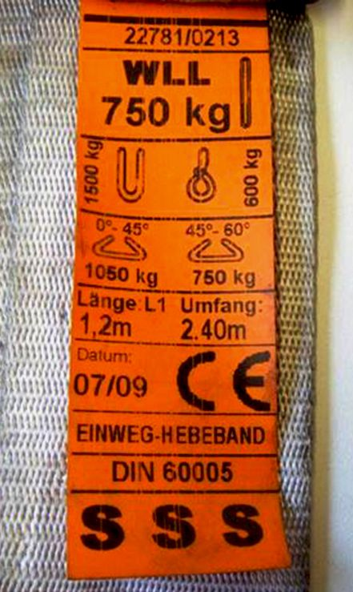

Für vorwiegend außerbetriebliche Transportvorgänge werden aus Kostengründen häufig sogenannte Einweg-Hebebänder eingesetzt. Die grundsätzliche Handhabung entspricht den Vorgaben für Mehrweghebebänder.
Eigenschaften wie die Schnittempfindlichkeit und auch der Sicherheitsfaktor (SF≥5) von Einweg-Hebebändern sind gegenüber genormten Mehrweghebebändern (DIN EN 1492-1) erheblich reduziert. Deshalb sind Einweg-Hebebänder ausschließlich zum Heben und Befördern einer Last innerhalb einer Transportkette vom erstmaligen Anschlagen der Last (Absendung) bis zum Endverbraucher einzusetzen. Einweg-Hebebänder bleiben während der gesamten Transportkette an der Last. Sie dürfen nicht mehrfach oder für unterschiedliche Lasten verwendet werden.
Das Anheben von Personen, von möglicherweise gefährlichen Materialien, wie geschmolzenem Metall, Säuren, Glasplatten, spaltbaren Materialien, Teilen von Kernreaktoren und alle Hebevorgänge, für die Sonderbedingungen gelten, sind mit Einweg-Hebebändern nicht zulässig.
Einweghebebänder müssen am Ende der Transportkette zerstört und entsorgt werden!

Abb. 8 Einweghebeband nach DIN 60005
Erkennbar sind Einweg-Hebebänder, die nach dieser Norm hergestellt wurden, an dem orangefarbenen Etikett und der Bezeichnung "Einweg-Hebeband" oder "Einweg-Schlinge". Sie kommen oft als endlose Einweg-Hebebänder oder als Schlaufen-Einweg-Hebebänder in der außerbetrieblichen Transportkette vor.
Einweg-Hebebänder, die nicht nach DIN 60005 hergestellt wurden, können sehr unterschiedliche Etiketten und Kennzeichnungen aufweisen.
Erkennbar sind diese Einweg-Hebebänder daran, dass sie mit folgenden oder sinngleichen Bezeichnungen gekennzeichnet sind: